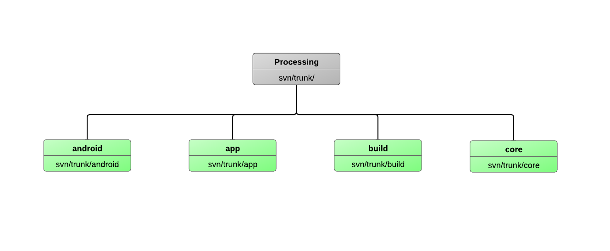

How It’s Made
One of the most exciting things to me, someone who got into programming through processing, is how well systems like lein/cake and repl driven development will help create a dev enviroment ideal for absolute beginners and experienced users alike.
Processing provides an environment where a young child could easily enter code to do basic math or string printing and simply hit “run”. While Processing targets “computer fundamentals in a visual context”, the ease with which users can incorporate external jar files makes it useful beyond just sketching sweet visual fx. Equally important, it allows students to focus on understanding language and design concepts rather than platforms, build processes, and dependencies. Systems like cake and lein will allow users to not have deal with the import process that Processing requires for external libraries minimizing not only the hassle of incorporating external libraries but also keeping the project source format and structure consistent for all users (which in turn makes sharing projects easier and more stable across different operating systems).
I worked a bit with Processing last summer on a 3D scene graph project for Android and spent a bit of time digging through the source and I think it would be helpful to take a quick look at the Processing projects design [1]. Processing basically consists of a few main components: the Swing text editing and project management application (app), the graphics libraries (core), and the build configurations for Linux, OSX, and Windows (build). Processing now has an Android mode which can export to Android projects but the Android code is essentially the core files re-written to using the Android drawing api rather than the Java api.
 [1]
GSoC Proposal
Google Summer of Code 2012
Clojure/dev proposal for Overtone
Jon Rose jonrose08@gmail.com
Project: Clojure/Dev: Lightweight Clojure editor,repl, and documentation browser
Who are you (include links to Google Code, Github, Bitbucket, etc)?
I am a programmer with a passion for creating art and sound with code. The road I have taken to discover my love for programming has not been short, or easy, but it feels good to be on track to launching a career in a field that I know will fascinate me forever. During my early 20’s, I was part of two start-up business ventures in between attending college courses at San Francisco State in broadcast and audio production. Although broadcast was not my calling, through the coursework for that major I discovered my passion for programming by learning systems like Processing and Max/MSP. This fall, I will be entering my final year at Chico State University where I am a computer science engineering major. Since discovering my deep interests in software engineering, I have been drawn to open source projects like Processing, Android, Arduino and Overtone. I am a github fanatic [0] and I have developed all my projects as open source on github. Some of the projects I have created or worked on include: embedding Processing for Android in honeycomb applications [1], controlling Processing from Android [2], OpenGL 3D scene graph library for Processing on Android [3], web application templates using Twitter Bootstrap, Ruby and Sinatra [4], core commits to Overtone for GUI components [5] and web documentation of UGens and Overtone for the Overtone website [6].
Which proposal are you interested in? What exactly do you intendto do? What will not be done? Feel free to submit a new one - however make sureto include a brief explanation. It’s also important to follow up on the mailinglist to ensure that there’s an appropriate mentor for your proposal.
I am applying for the Overtone Lightweight Clojure editor, repl, and documentation browser project through Clojure/Dev. With the proper configuration of dependencies and development environment, Overtone is a powerful and intuitive tool for learning sound design and composition. Recently, I hosted an Overtone workshop for my school’s Open Source club [7]. I hoped that the session would end with everyone in the workshop being able to enjoy a live coding jam session. In reality, however, the majority of the time was spent configuring various operating systems, editors, and dependency managers like cake and leinengine. After hosting the workshop I realized that what the Overtone project would benefit from most is a development application which lets users only have to worry about coding sound and then run their projects with a single click. With this project, I plan to address this need by focusing on three main points during development. The first main focus is creating a lightweight editor and repl. These tools allow users to organize and manage their code for individual projects as well as take advantage of Clojure’s style of repl driven development. After discussion with the project mentors and on the Overtone mailing list, I think leveraging resources from a couple other successful open source projects will allow me to have the basic editor and repl running Overtone quickly. The Clooj [8] project on github would provide an editor and repl written in Clojure which I would aim to combine with Seesaw [9], a popular Java Swing library that I have experience using through my previous contributions to Overtone [10] [11] [12]. By using Clooj I will have the basic functionality of an editor from the beginning and Seesaw would allow for quick and efficient development of features unique to Overtone. The second focus point would be to build all of the Overtone and related project dependencies into the application allowing for quick compiling and running of projects. This layer would be what lets students and users focus on the creative aspect of using Overtone and Clojure and not have to worry about operating systems or project version issues. Additionally, I would use Seesaw to incorporate an intuitive user interface for running projects and controlling basic audio features like transport control and levels. The third focus point will be to incorporate functional documentation into the project. Functional documentation has proven to be an integral component to supporting new user communities for not only teaching new users but providing quick access to documentation for users of all levels. The Overtone Sketchpad will not be a complex IDE full of advanced features with a large footprint; it will be a light, simple and efficient toolbox specific to synthesizing audio and creating music.
Why are you the right person for this task?
I have been dedicated to creating open source materials since creating my first programs. In fact, I created my first “hello, world!” applications in Processing sketches and Max/MSP patches. While working on various processing projects I have spent a lot of time learning how graphics libraries and application code work together to create a useful tool for both students and professionals. The time and interest I have devoted to understanding how to create open source programs combined with my experience in audio design and production, allows me to understand what essential tools could be useful for developers working with Overtone. I have married these two expertise areas on a new website for Overtone which focuses on documentation for the Overtone API and the Unit Generators, the audio building blocks of Overtone projects.To allow for the documentation to be reflective of the current build releases, the online documentation I have made is dynamically generated through Clojure cores’ meta-data functions. Ultimately, this same system that I have designed for the projects’ site could be combined with more in depth examples to make a well presented and functional documentation similar to those being used in other large, open source projects like Processing and Arduino. This style of self documented code is ideal for open source projects like Overtone and would allow me to deliver useful information in a compact application. My experience with both Overtone and the libraries which would be used on the project combined with my active participation in the user communities make me uniquely qualified and excited to complete this project.
To what extent are you familiar with the software you’re proposing to work with?
The features of Overtone that I’ve worked with, like creating GUI components in Clojure using Seesaw and organizing Overtone documentation have given me a valuable perspective on what it would take to realistically complete this project. Additionally, my experience using Overtone to create sound in fun ways [13] give me a valuable perspective on what users need to focus on being creative. Through discussions on the Overtone mailing list and communication with the project mentors, I have developed a manageable timeline and base of resources to get the project off the ground. With these in place I’ll be able to focus on the central goal of providing a meaningful and intuitive tool for Overtone hackers.
How many hours are you going to work on this a week? 10? 20? 30? 40? Do you have other commitments that we should know about? If so, please suggest a way to compensate if it will take much time away from Summer of Code. ####
I intend to take one math course at Chico State over the summer from 6/04 to 7/12, which is four days a week for 2:45 hours a day. If my proposal is accepted, I would plan to work on it 30+ hours a week.
Where do you live?
I was born and raised in the San Francisco Bay Area and currently reside in Chico, California.
GSoC Project Accepted
A little over a month ago I submitted my proposal to the Google Summer of Code program through the Clojure/dev organization. After many discussions with the Overtone mentors (Jeff Rose and Sam Aaron) about what sorts of features would be needed and what other open source projects could be utilized to make the Overtone sketchpad a reality I was excited at the prospect of working on such a cool and useful project. During this discussion phase I also gave a short Overtone talk to my school’s Open Source Team which provided some of the most useful information about what would be most valuable to get the project off the ground. The biggest hurdle was everyone getting a working Overtone dev environment on various Linux distributions, OSX, and yes, some Windows.
In the midst of an insanely busy week of finals preparation, moving, and wrapping up final spring projects in Compliers and Operating Systems, I received an email stating that the project had been accepted. I can’t say enough about how grateful I am to the Google Summer of Code program and most of all to the Clojure/dev team for the opportunity.
Looking ahead, I will begin working on the project full speed starting in a couple weeks but in the mean time I will be working with the mentors to iron out the summer’s development road map and hopefully get feedback from the Overtone and Clojure community on what they think should be incorporated into the project. If you have any suggestions for features or general thoughts on the project please comment here or consider adding to the project wiki.